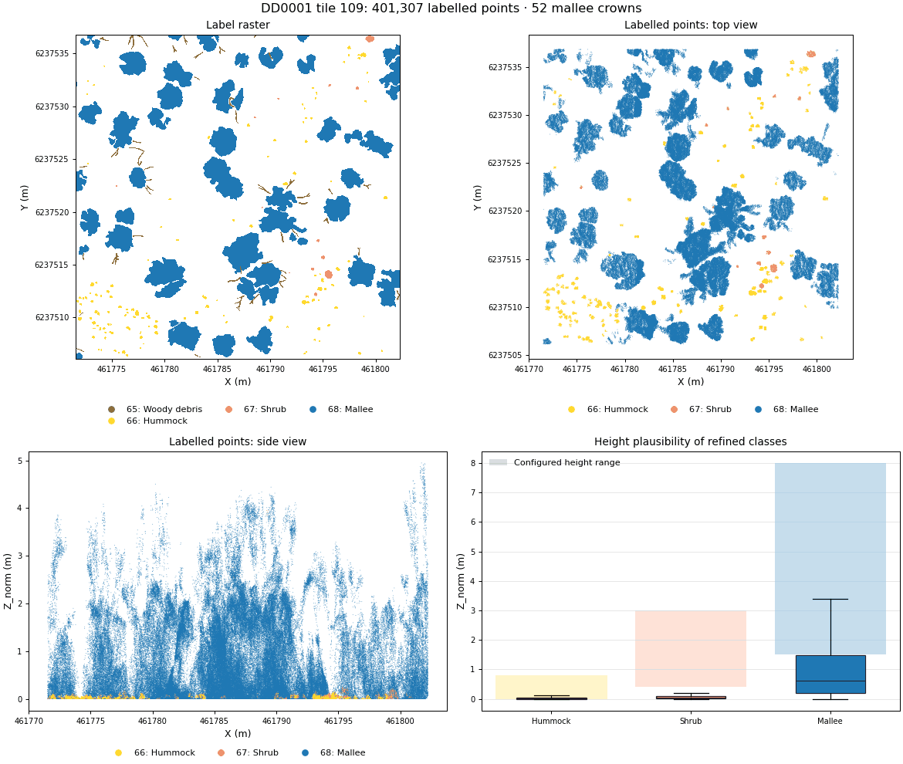

Label transfer and rangeland benchmarks
At Calperum Station, South Australia, the study transfers vegetation growth-form labels from drone imagery to aligned LiDAR. Height and crown structure refine the labels for 3D model training.
To reproduce the study, start with the available data and entry points.
fvc3d.transfer_labels() in one call.
05 | Model input prepPrepare local-coordinate PLY files and verify labels.
3D deep learning modelsPrepare datasets, run inference or training, and evaluate predictions.
fvc3d.transfer_labels() runs Phase 4. It checks alignment between a growth-form GeoTIFF and a co-registered LAS/LAZ, returns per-point labels and diagnostics, and can write class codes, heights and crown IDs to LAS/LAZ. See the quick start and API reference.
Citation
Sotomayor, L.N., Lucieer, A., Turner, D., Barthelemy, J., Kattenborn, T. (2026). From 2D labels to 3D structure: Scalable label transfer and benchmarking of 3D vegetation models in rangeland ecosystems. EarthArXiv (preprint). https://doi.org/10.31223/X5948M
Submitted to the ISPRS Open Journal of Photogrammetry and Remote Sensing, special issue: “Advanced Uncrewed Vehicles solutions: at the crossroad of Remote Sensing, Computer Vision and Robotics”.
Contributions of the preprint
Generate training labels for LiDAR points without manual point-by-point annotation.
Explore label transferCompare zero-shot transfer, fine-tuning and training from scratch with ForestFormer3D, and zero-shot instance segmentation with SegmentAnyTree.
Explore experimentsForestFormer3D scored 85.2% mean intersection over union (mIoU) on the forest benchmark. In medium- and low-density rangeland, zero-shot scores were 41.1% and 16.1%, rising to 49.6% and 63.1% after sequential fine-tuning. The low-density fine-tuning test set had no mallee crowns for instance evaluation. See Tables 7 and 9 in the preprint.
Data products and acknowledgements
We thank Megan Lewis for reference labelling, TERN’s Ecosystem Surveillance and Landscapes teams, Ben Sparrow, Poornima Sivanandam and Juan Carlos Montes-Herrera for drone operations and data processing, and the Australian Landscape Trust for site access.
Download the UAS imagery and manual labels, labelled 3D tiles, models and predictions, or the FOR-instanceV2 forest dataset.
We also acknowledge the developers of ForestFormer3D (Xiang et al., 2025) and SegmentAnyTree (Wielgosz et al., 2024) for the models used in the experiments.
Set up the workflow environment
Where to start
- Process your own raw LiDAR. If you have a georeferenced point cloud and an imagery DSM, start with Phase 1 | DSM generation.
- Try label transfer on study data. Start with Calperum tile 109, which includes a label raster and an aligned LiDAR tile.
- Reproduce a model benchmark. Start with the experiment guide and use the released tiles, split lists and checkpoints.
The Calperum release starts at tile level. Phases 1–2 require full-site inputs, so use your own data for those phases.
Use the table below to find the environment for your chosen phase. The commands follow the current repository layout. See Versions for the preprint’s code snapshot.
| Phase | Environment | Set up |
|---|---|---|
| 1. DSM generation | Shared uv environment, plus the PDAL program | Steps 1–4 below |
| 2. Co-registration | Shared uv environment | Steps 1–3 below |
| 3. 2D imagery prep | Separate geospatial environment (GDAL, GeoPandas, Rasterio) | Phase 3 setup guide |
| 4. 3D LiDAR prep | Geospatial environment with PDAL and its Python bindings, or fvc3d in the shared uv environment (no PDAL) | Phase 4 setup guide or Quick start |
| 5. Model input prep | Separate conda environment, fvc-phase5 | Phase 5 setup guide |
| 3D deep learning models and experiments | Linux with an NVIDIA GPU and Docker | 3D deep learning models |
Run these commands in Linux/WSL or Windows PowerShell, using the same environment for setup and processing.
Copy buttons appear when your browser permits clipboard access; otherwise select the command text manually.
1. Prerequisites
Install Git and uv if needed, then check that both are available:
git --versionuv --version2. Get the repository
Clone it once in the directory where you want to keep the project:
git clone https://github.com/LNSOTOM/fvc_structure.gitEnter the repository:
cd fvc_structure3. Create the shared environment
From the repository root, install from the checked-in lockfile: fvc3d, the Phase 1–2 tools and the notebook tools. It uses Python 3.10, set in .python-version; uv downloads it if needed.
uv sync --lockedCheck that Python starts and the processing libraries import:
uv run python --versionuv run python -c "import numpy, rasterio, scipy, skimage, laspy, yaml, fvc3d; print('Dependencies OK, fvc3d', fvc3d.__version__)"Expect Python 3.10 and Dependencies OK, fvc3d with its version.
4. Check PDAL for Phase 1
DSM generation also needs the external pdal executable. Install it separately using the Phase 1 setup guide, then check that it is on the terminal's PATH:
pdal --versionPhase 2 does not require the PDAL executable.
Build a digital surface model
Use PDAL to turn a georeferenced LAS/LAZ into a GeoTIFF of maximum LiDAR elevation. Use your own point cloud here, or start with the published study tiles in Phase 3.
1. Set up the environment
Activate the shared environment and install the PDAL executable.
2. Configure a job
From the repository root, copy the template and set the input, output and grid resolution. The example uses 0.03 m.
cp phase_1_image_processing/configs/dsm_job.example.yml phase_1_image_processing/configs/dsm_job.local.yml3. Generate the DSM
Estimate the grid first, then generate the raster.
uv run python phase_1_image_processing/dsm_lidar.py --config phase_1_image_processing/configs/dsm_job.local.yml --estimate-onlyuv run python phase_1_image_processing/dsm_lidar.py --config phase_1_image_processing/configs/dsm_job.local.ymlCheck the output extent, CRS, resolution and NoData value.
Batch processing and metadata
The CLI runs one job. The notebook also supports batch jobs, and the workflow can write a STAC sidecar. See the Phase 1 reproducibility guide.
Next. Take the LiDAR DSM, source LAS/LAZ and imagery DSM to Phase 2.
Align LiDAR to the imagery DSM
Use the Phase 1 LiDAR DSM, its source LAS/LAZ and an overlapping imagery DSM in the same CRS. GeFolki estimates the horizontal shift and applies it to the point cloud.
1. Set up the environment
Use the shared environment. For study data that is already aligned, use the Calperum tile 109 example.
2. Configure one site and pass
cp phase_2_lidar_coregistration/configs/coregistration_job.example.yml phase_2_lidar_coregistration/configs/coregistration_job.local.ymlEdit the paths in preprocess, flow and align so each stage reads the previous stage’s output. For L1, set flow.radius to [16, 8, 4] and flow.levels to 6.
3. Run co-registration
Run the L1 commands in order and check each output before continuing.
uv run python phase_2_lidar_coregistration/gefolki/python_myscripts/gefolki_preprocess.py
uv run python phase_2_lidar_coregistration/gefolki/python_myscripts/gefolki_flow_l1.py
uv run python phase_2_lidar_coregistration/gefolki/python_myscripts/align_lidar_with_flow_l1.pyCheck the registered surface, retained extent and point count. The alignment step drops points outside the flow grid.
L2 settings and alignment checks
For L2, keep the template settings and use gefolki_flow_l2.py and align_lidar_with_flow_l2.py. The Phase 2 reproducibility guide documents the settings. Use the validation notebook to check alignment statistics.
Next. Prepare masks and predictor grids in Phase 3. Keep the aligned point cloud for the tile-level ICP registration required by Phase 4.
Prepare imagery tiles and structure labels
Use a multispectral orthomosaic, an annotated grid, FVC shapefiles and matching 1 cm reference tiles to create five-band imagery tiles and growth-form masks at 1 cm and 5 cm.
For the study inputs, see the Calperum imagery and the published polygons and masks in folders 1_structure_annotations_shp and 2_structure_label_raster.
1. Set up Phase 3
Phase 3 uses a separate environment with GDAL, GeoPandas and Rasterio. Follow the Phase 3 setup guide, then activate it in your terminal.
2. Configure a job
From the repository root, copy the template and replace every path. Set the 1 cm reference directory and filename pattern to match your annotation tile IDs. Use new output directories.
cp phase_3_2D_imagery_prep/configs/imagery_prep_job.example.yml phase_3_2D_imagery_prep/configs/imagery_prep_job.local.yml3. Run the workflow
Run all five stages together.
python phase_3_2D_imagery_prep/imagery_prep.py --config phase_3_2D_imagery_prep/configs/imagery_prep_job.local.yml --stage allCheck the 5 cm masks and predictor tiles for matching CRS, resolution, grid origin and extent. Review any excluded or unrecognized classes.
Run individual stages and check label quality
Replace all with tile, stack, classify, rasterize and downsample, running them in order. Use new output paths when rerunning a stage.
The label QA guide covers polygon overlaps, raster agreement, centroid shifts and ±5 cm boundary sensitivity. Label QA guide.
Next. Take the 5 cm growth-form masks and matching predictor grids into Phase 4 with LiDAR tiles for the same footprints.
Prepare structure-classified point clouds
Transfer a Phase 3 growth-form mask onto its matching LiDAR tile. The historical workflow uses an ICP-registered LAS and a matching predictor raster. Keep all inputs in the same projected CRS in metres.
To run label transfer on the published, height-normalized tile, use the fvc3d Calperum example. To run the historical workflow, follow the steps below.
1. Set up Phase 4
Create and activate the PDAL environment from the Phase 4 setup guide.
2. Configure a tile
From the repository root, copy the template and set the tile, mask, predictor and output paths.
cp phase_4_3D_lidar_prep/configs/lidar_prep_job.example.yml phase_4_3D_lidar_prep/configs/lidar_prep_job.local.yml3. Run the workflow
python phase_4_3D_lidar_prep/lidar_prep.py --config phase_4_3D_lidar_prep/configs/lidar_prep_job.local.yml --stage allTo inspect each stage before continuing, replace all with mask, ground, normalize and fuse, running once for each in order. Existing outputs are not overwritten.
Check the fused labels
Verify alignment, class counts, heights above ground and crown IDs. The fvc3d diagnostics report voxel agreement, height plausibility and crown retention.
Published label-transfer checks
The paper compares each stage with the 1 cm annotation on a 5 cm grid across 15 tiles per site. The scores measure agreement with the input labels.
| Stage | Medium mIoU | Low mIoU |
|---|---|---|
| 1 cm reference | 1.000 | 1.000 |
| 5 cm label grid | 0.807 | 0.996 |
| Sampled at LiDAR returns | 0.694 | 0.881 |
| 10 cm voxel transfer | 0.531 | 0.691 |
| Crown processing and consolidation | 0.402 | 0.631 |
Inspect LAS attributes
Replace PATH_TO_INPUT.las and run from the repository root. Check the CRS, point format and dimensions. The fused file includes classification, Z_norm and treeID.
uv run python -c "import laspy; r=laspy.open('PATH_TO_INPUT.las'); h=r.header; print('LAS:', h.version, 'point format:', h.point_format.id, 'points:', h.point_count); print('CRS:', h.parse_crs()); print('scale:', h.scales, 'offset:', h.offsets); print('dimensions:', ', '.join(h.point_format.dimension_names)); print('extra dimensions:', ', '.join(h.point_format.extra_dimension_names) or 'none'); r.close()"Next. Pass the fused LAS to Phase 5 to create a model input tile.
Prepare classified LiDAR for modelling
Convert a Phase 4 LAS tile with Z_norm and treeID into a local-coordinate PLY and an XYZ offset. For the study tiles, use 6_fused_3d_labels from the Calperum archive on Zenodo.
1. Set up the environment
Create and activate the fvc-phase5 environment using the Phase 5 reproducibility guide.
2. Configure a tile
From the repository root, copy the template and edit the paths. Use historical_five_class to reproduce the released PLY tiles. Use three_class_hsm for hummock, shrub and mallee tiles. It rejects forb and woody debris.
cp phase_5_3d_cnn_training/configs/lidar_to_ply.example.yml phase_5_3d_cnn_training/configs/lidar_to_ply.local.yml3. Export the PLY
python phase_5_3d_cnn_training/prepare_lidar.py --config phase_5_3d_cnn_training/configs/lidar_to_ply.local.ymlKeep the PLY, its offset and the source LAS with its CRS. You may need both the Phase 5 offset and a model-specific offset to restore global coordinates.
Class mapping for models
The paper groups forb and hummock as ground, shrub as wood, and mallee as leaf. Phase 4 handles woody debris before export.
File codes and exporter checks
Historical LAS codes 64–68 map to PLY IDs 1–5 in the order forb, woody debris, hummock, shrub and mallee. The ForestFormer exporter maps sets 1/4/5 and 3/4/5 to 0/1/2 but leaves mixed 1/3/4/5 and forb-only sets unchanged. Some evaluation configs map shrub to ground. Check the exported masks and the active config against the paper’s mapping.
Next. Take the PLY and offset to 3D deep learning models for dataset creation and evaluation.
From labelled tiles to model predictions
Start with the labelled PLY tiles and coordinate offsets from Phase 5. Choose a model below, then match its predictions to the source tiles before evaluating or mapping them.
Build the model dataset, then train or evaluate a checkpoint for semantic and instance segmentation.
ForestFormer3D stepsRun pretrained inference on the PLY tiles, then compare predicted tree instances with the reference crowns.
SegmentAnyTree stepsModel runbooks use Linux and NVIDIA GPU/Docker. Windows users can use the earlier workflow and, where supported, a separate WSL/Linux GPU environment; native Windows model execution is not established.
ForestFormer3D | Semantic and instance segmentation
Prepare and run
- Check Phase 5 tiles and define the splits.
- Export the model dataset.
 DD0001 tile 106 dataset inspection, not a model prediction.
DD0001 tile 106 dataset inspection, not a model prediction.
- Evaluate a checkpoint or train a model.
Files and setup
Phase 5 PLY + _offset.npy→forainetv2_instance_data/*_vert.npy,*_sem_label.npy,*_ins_label.npy,*_offsets.npyand bounding boxes.- Dataset creation also writes point/semantic/instance files and
forainetv2_oneformer3d_infos_*.pkl. - The current full-scene test path writes prediction PLY files with
semantic_pred,instance_pred,scoreand, when provided, ground-truth fields. Verify the selected model implementation and output directory. - Docker and dataset quick setup · Experiment runbook
Follow the quick setup to prepare the dataset first. The experiment runbook provides the split generation, preprocessing, training and evaluation commands; its paths, GPU IDs and checkpoints are examples to replace. The preprint reports final-epoch models as the primary comparison, while the runbook also illustrates other checkpoint selections: record the checkpoint actually evaluated.
ForestFormer3D checkpoints
Forest-pretrained baseline: The ForestFormer3D authors provide the pretrained model in FOR-instanceV2 on Zenodo. Download clean_forestformer.zip and follow the ForestFormer3D setup instructions. This is the forest baseline, not a rangeland fine-tuned model.
Rangeland experiment checkpoints: The following final-epoch files exist in the saved experiment outputs. Paths are relative to the experiment work_dirs. They are not tracked in this repository; download them, with their configs, training logs and test predictions, from the Zenodo record (model_exp*.zip).
- Experiment 2A, joint fine-tuning:
exp2A_epoch3000_train/epoch_3000_fix.pth. - Experiment 2B, stage 1, medium:
exp2B_stage1_medium_train/epoch_3000_fix.pth. - Experiment 2B, stage 2, low:
exp2B_stage2_low_train/epoch_3000_fix.pth. - Experiment 3A, joint training from scratch:
exp3A_scratch_train/epoch_3000_fix.pth. - Experiment 3B, medium training from scratch:
exp3B_scratch_medium_train/epoch_3000.pth. - Experiment 3C, low training from scratch:
exp3C_scratch_low_train/epoch_3000_fix.pth.
The comparison examples use the Experiment 2B stage-1 and stage-2 final-epoch checkpoints. The _fix suffix denotes a checkpoint converted for spconv compatibility; the 3B file listed above is unconverted. See the experiment runbook for checkpoint conversion and evaluation. Preserve each checkpoint with its config, class mapping, split lists, software environment, training provenance and checksum; verify the exact checkpoint before comparing results.
SegmentAnyTree | Instance segmentation
Run and evaluate
- Prepare input tiles and reference IDs.
- Run zero-shot inference and merge outputs.
- Compare instances with reference crowns.
 Medium-L1 offline metrics from the saved outputs, not a result generated by this page.
Medium-L1 offline metrics from the saved outputs, not a result generated by this page.
Files and setup
Phase 5 PLY→ inference and merge →final_results/RUN_ID/results/*.lazin the multi-GPU workflow.- Result attributes depend on the available inputs and merge;
PredInstance=0denotes an unassigned point in the merge output. Semantic fields are not the paper's reported SegmentAnyTree performance measure. - Multi-GPU inference and metrics runbook · Model setup
The saved scatter plot shows 15 medium-L1 files from an existing offline analysis; each point represents one file. Its F1 and coverage values depend on that run's inputs and evaluation settings and should not be assumed to reproduce the paper's reported results.
Explore the model results
Compare ForestFormer3D reference labels and saved predictions for forest (Experiment 1A), medium-density rangeland (Experiment 2B, stage 1) and low-density rangeland (Experiment 2B, stage 2).
Drag the dividing line or use either slider to reveal semantic colours on the left and instance colours on the right. Drag elsewhere to rotate both views. The controls also work with a keyboard; hover over a point for its numeric labels.
Loading comparison data…
Point inspection: hover over either view.
Both views share a deterministic sample of up to 60,000 points, rounded to 1 mm; use full data for metrics. Instance colours repeat independently and do not imply matches. Counts are unique saved IDs, not necessarily the paper's post-processed counts. A colour-blind-friendly semantic palette and numeric labels are available. Rebuild information.
Next. Use the experiment protocol to select the split, checkpoint and metrics for your run.
Experimental design
The preprint tests how well forest-trained models transfer to Calperum rangelands and whether labelled rangeland tiles improve performance. The primary rangeland experiments use L1 LiDAR. Supplementary comparisons use L2.
Data splits and evaluation
- Experiment 1. Evaluate on the held-out FOR-instanceV2 forest split and all 15 tiles at each rangeland site.
- Experiments 2 and 3. Use the same train, validation and test splits. Medium density uses 10, 3 and 2 tiles. Low density uses 10, 2 and 3 tiles. The primary results use final-epoch checkpoints.
- Metrics. ForestFormer3D reports class IoU and mIoU. Both models report instance precision, recall, F1 and coverage. A predicted instance matches a reference at point-wise IoU ≥ 0.5.
Three experiment designs
- Experiment 1 | Zero-shot transfer.
- Experiment 2 | Few-shot fine-tuning.
- Experiment 3 | Training from scratch.
Read the results
Curriculum fine-tuning achieved the highest reported rangeland semantic scores, with 49.6% mIoU at medium density and 63.1% at low density. Site-specific training from scratch reached 38.07% and 30.21%, respectively. Experiment 1 used all rangeland tiles, while Experiments 2 and 3 report on held-out subsets. The low-density held-out subset had no reference mallee crowns. See Tables 7–10 in the preprint.
Install fvc3d
Install fvc3d with Python 3.10 or newer. If you already set up the shared research environment, go straight to the quick start.
pip install fvc3dFor the plotting functions, install the plot extra, which adds Matplotlib:
pip install "fvc3d[plot]"Check that it imports:
python -c "import fvc3d; print('fvc3d', fvc3d.__version__)"Use an active Python environment for these commands, then run label transfer.
Development version
pip install "fvc3d @ git+https://github.com/LNSOTOM/fvc_structure.git"In a clone of the repository, uv sync installs fvc3d together with the tools for the paper's workflow; see Set up the workflow environment.
Label a LiDAR tile
Start with Calperum tile 109 or skip to your own aligned files.
Try it on the Calperum study data
Download and unzip the medium-site inputs (645 MB).
curl -L -o label_transfer_inputs_medium.zip "https://zenodo.org/records/24431573/files/label_transfer_inputs_medium.zip?download=1"
unzip label_transfer_inputs_medium.zipUse class_map="paper" for the published raster codes 0–4.
from fvc3d import transfer_labels
d = "label_transfer_medium/"
result = transfer_labels(
labels=d + "2_structure_label_raster/mask_structure_3072.109.tif",
point_cloud=d + "5_lidar_znorm/z_norm_csf_tiles_multispectral.109.las",
output="labelled_109.laz",
class_map="paper",
)
print(result.summary())Expected output: labelled_109.laz with 52 mallee crowns. See the tile 109 summary.
Try it on your own data
Use a growth-form GeoTIFF and its co-registered LAS/LAZ. Check the CRS and height requirements, then replace the paths and map your raster codes. This example uses 1 for shrub and 2 for mallee.
from fvc3d import transfer_labels
result = transfer_labels(
labels="growth_forms.tif",
point_cloud="lidar.laz",
output="labelled_vegetation.laz",
class_map={1: "shrub", 2: "mallee"},
validate_alignment=True,
)
print(result.summary())Leave background codes out of class_map. For the default codes 64–68, omit class_map. See Use your own classes for other growth forms.
Read the result
Each array holds one value per input point, in input order:
result.classification # 64–68, or 0 for unlabelled
result.tree_id # mallee crown ID, 0 = none
result.z_norm # height above ground (m)
result.confidence # Stage 4 class probability, NaN where not evaluated
result.metrics # counts and statistics for each stage
result.alignment # AlignmentReport
result.quality # QualityReport: the paper's three diagnostics (below)Expand the tile 109 summary to see the alignment and quality diagnostics.
Tile 109 output
Labelled 401,307 of 1,593,979 points (25.2%); 52 mallee crowns
forb 0, woody_debris 0, hummock 19,816, shrub 3,551, mallee 377,940
Z_norm from: Z_norm dimension in point cloud
written to: labelled_109.laz
Alignment: OK
CRS match: True; projected metres: True
points over the label raster: 99.8%
labelled pixels with LiDAR points: 95.4%
canopy offset: dx=-0.140 m, dy=-0.060 m (|d|=0.152 m, limit 0.50 m)
canopy IoU: 0.38 as given, 0.39 after shift
Voxel-level label agreement (Step 2 vs Step 5): OA 98.9% over 107,952 voxels
IoU hummock 1.00, shrub 1.00, mallee 0.99
absent after consolidation: woody_debris
Height plausibility of refined classes (median Z_norm, % outside configured range):
hummock n= 19,816 median 0.02 m outside 0.1%
shrub n= 3,551 median 0.05 m outside 99.9%
mallee n= 377,940 median 0.62 m outside 75.8%
Mallee crown-instance retention: 52 treeIDs / 54 watershed crowns = 96.3%The quality report holds the paper's three diagnostics; see quality diagnostics.
As in the paper, shrub and mallee points mostly fall below their configured ranges: every point under a labelled pixel keeps its label, including ground under the canopy. Woody debris is absent after consolidation because Stage 5 turns it into mallee above 0.5 m and drops the rest.
The output is LAS 1.4 and keeps the input's CRS, scale and offset. It holds labelled points only; keep="all" writes every point.
Plot the result
Install the plot extra to draw quick-look figures in the paper's class colours.
import fvc3d.plot
fig = fvc3d.plot.summary(result) # four panels, as below
fig.savefig("tile_109.png", dpi=200)
fvc3d.plot.points(result, view="side", color_by="z_norm")
fvc3d.plot.crowns(result)

fvc3d.plot.summary(result) for the paper's tile 109 (published data, class_map="paper").| Function | Shows |
|---|---|
summary(result) | Label raster, labelled points from above and from the side, and class heights; returns a figure. |
labels(raster) | A label raster (result.labels or a GeoTIFF path) in class colours. |
points(result, view, color_by) | Labelled points, view="top" or "side", coloured by "class", "treeID" or "z_norm". |
crowns(result) | Crown points from above, one colour per treeID. |
heights(result) | Height plausibility of refined classes: Z_norm per class against its configured range. |
alignment(result) | Crown-class label pixels against LiDAR canopy, with the measured offset. |
Each function accepts ax= to draw into an existing Matplotlib figure and colors={code: "#rrggbb"} to change colours, and returns the axes for further styling.
Process a folder of tiles
From a repository clone, run the example script to pair files by the last number in their names (mask.109.tif with z_norm.109.las), skips tiles that fail the alignment check, and writes metrics.csv:
uv run python examples/transfer_labels.py --batch labels_dir/ lidar_dir/ out_dir/For the paper's data, add --class-map paper:
uv run python examples/transfer_labels.py --batch --class-map paper label_transfer_medium/2_structure_label_raster/ label_transfer_medium/5_lidar_znorm/ out_dir/Output for ForestFormer3D
The growth forms are the paper's classes. For the model experiments only, the paper aligned them to the classes of FOR-instanceV2, the forest dataset ForestFormer3D is trained on. To write those classes instead, add classes="FOR-instanceV2" to your transfer_labels() call. The mapping is:
| Growth form (paper class) | FOR-instanceV2 class | LAS code | ForestFormer3D model ID |
|---|---|---|---|
| Forb, grass hummock | ground | 1 | 0 |
| Shrub | wood | 2 | 1 |
| Mallee | leaf | 3 | 2 |
| Woody debris | none: merged into mallee above 0.5 m, otherwise dropped | ||
The method still runs on the growth forms; only the output is relabelled. On tile 109 this gives ground 19,816, wood 3,551 and leaf 377,940 points: the paper's result, relabelled. For rangelands these are approximate transfer targets, not a literal taxonomy.
Prepare your data for label transfer
Check your raster and LiDAR, choose how to map the raster codes, then adjust the settings if needed. For a first run with the defaults, try the Calperum example.
Prepare the inputs
| Input | Requirement | If yours differs |
|---|---|---|
| Label classes | The paper's classes, LAS codes 64–68; other values are ignored. | class_map="paper" for the published 0–4 rasters, a dict such as {1: "shrub", 2: "mallee"}, or your own classes (see below) |
| Height above ground | A Z_norm dimension, or ground points classified as 2. | ground="ground.las", e.g. from groundnorm csf |
| CRS | The same projected CRS, in metres, for both files. | Reproject first; fvc3d does not. |
| Registration | LiDAR registered to the imagery the labels came from. | Run Phase 2 first. |
The paper's classes (growth forms)
The method works with the paper's five growth-form classes (paper Tables 2 and 4). They are the defaults, and the other steps refer to them by name:
| Class | Description | Raster ID | LAS code | Name in fvc3d | Height range |
|---|---|---|---|---|---|
| Forb (FO) | Herbaceous or slightly woody ground vegetation | 0 | 64 | forb | 0.00–0.40 m |
| Woody debris (WD) | Standing or emergent dead branches and stems, no foliage | 1 | 65 | woody_debris | 0.05–5.00 m |
| Grass hummock (GH) | Spiny perennial hummock grass, including senescent | 2 | 66 | hummock | 0.00–0.80 m |
| Shrub (SH) | Multi-stemmed woody shrubs, including chenopod and senescent | 3 | 67 | shrub | 0.40–3.00 m |
| Mallee (MA) | Multi-stemmed eucalypts sprouting from a lignotuber; split into crowns with a treeID | 4 | 68 | mallee | 1.50–8.00 m |
Raster IDs are the codes in the published label rasters (class_map="paper"); LAS codes are written to the output classification. Height ranges are the configured ranges used when a tile has too few points of a class, and in the height-plausibility diagnostic. The low site has forb, woody debris and shrub; the medium site has woody debris, grass hummock, shrub and mallee.
Use your own classes
Your labels can use any codes and any classes. There are two settings:
class_mapmaps the values in your raster to class names, e.g.{0: "ground", 3: "wood", 4: "leaf"}. Values left out are ignored.classesdefines the classes themselves. The default is the paper's five growth forms; for your own, copyconfigs/classes.yamland edit it.
For example, FOR-instanceV2's ground, wood and leaf classes, saved as my_classes.yaml:
classes: {1: ground, 2: wood, 3: leaf}
height_ranges: {1: [0.0, 0.8], 2: [0.4, 3.0], 3: [1.5, 8.0]}
crown_class: leaffrom fvc3d import transfer_labels
result = transfer_labels(
labels="my_labels.tif",
point_cloud="my_lidar.laz",
output="my_labelled.laz",
classes="my_classes.yaml",
class_map={0: "ground", 2: "ground", 3: "wood", 4: "leaf"},
)
print(result.summary())The output's classification uses your codes (here 1–3), and each leaf crown gets a treeID. On the paper's tile 109 this scheme labels 369,763 points (ground 19,816, wood 3,551, leaf 346,396) and finds 52 leaf crowns.
| Key | Paper's value | What it does |
|---|---|---|
classes | 64 forb … 68 mallee | LAS code (1–255) and name of each class. 0 means unlabelled. |
height_ranges | e.g. mallee 1.5–8 m | Expected height above ground per class. Used when a tile has too few points of a class, and in the height report. |
crown_class | mallee | Class split into crowns with a treeID. null skips crown detection and refinement. |
merge | {woody_debris: mallee} | Points of one class above 0.5 m become another; lower ones become unlabelled. |
promote_unlabelled | true | Unlabelled points at or above 1.3 m join the crown class. |
output_classes, output_map | not set | Optional relabelling of the output, e.g. to ground/wood/leaf as in classes="FOR-instanceV2". treeID is unchanged. |
Only classes and height_ranges are required. This example runs the method on the three classes directly, without the paper's woody-debris merge and promotion rules, so it keeps fewer leaf points than the paper (346,396 against 377,940). To reproduce the paper's ground, wood and leaf labels, use classes="FOR-instanceV2" (see the Quick start).
Change method settings
To test a smaller voxel size, rerun Calperum tile 109 after extracting the study data. Keep class_map="paper" for the published raster codes and write to a new file so you can compare runs.
from pathlib import Path
from fvc3d import transfer_labels
tile_dir = Path("label_transfer_medium")
result = transfer_labels(
labels=tile_dir / "2_structure_label_raster/mask_structure_3072.109.tif",
point_cloud=tile_dir / "5_lidar_znorm/z_norm_csf_tiles_multispectral.109.las",
output="labelled_109_5cm.laz",
class_map="paper",
config={"voxel_size_xy": 0.05, "voxel_size_z": 0.05},
)
print(result.summary())Compare the labelled point count, class counts and quality diagnostics with the default 10 cm run. To reuse settings across tiles, pass a YAML file as config.
| Key | Default | Effect |
|---|---|---|
voxel_size_xy, voxel_size_z | 0.10 m | Stage 2 voxel size. Larger voxels label more points but spread labels beyond the 2D footprint. |
min_tree_dist | "auto" | Minimum distance between crown peaks, estimated from canopy spacing (0.80 m on DD0001), or a fixed value in metres. |
smoothing_sigma | "auto" | Canopy smoothing before crown detection, estimated with the spacing (1.33 cells on DD0001), or a fixed value. |
min_conf, min_flip_ratio | 0.3, 1.5 | Confidence Stage 4 needs to fill an empty label or replace one. |
promote_unlabelled_znorm | 1.3 m | Unlabelled points at or above this height become mallee. |
legacy_crown_clamp | false | true reproduces the paper code exactly (see below). |
How the label transfer works
transfer_labels() follows the paper's 2D-to-3D method (Section 3). It first labels each LiDAR point from the raster pixel beneath it; these draped points are the evidence. It then runs five stages over the whole point cloud, using the height above ground (Z_norm) of every point. Defaults are the paper's; each can be changed in settings.
| Stage | What it does | Key settings (default) |
|---|---|---|
1. Class height rangesrefinement.class_height_ranges | Matches each labelled point to the nearest LiDAR point and takes the 15th–85th percentile of Z_norm per class, after dropping the 5% tails. A class with fewer than 20 points uses its configured range (paper Table 4). The minimum crown height is 0.7 × the crown class's lower bound, at least 0.6 m. | height_match_radius (0.30 m) |
2. Voxel transfervoxel_transfer | Builds a 3D grid shared by both clouds and gives every LiDAR point the majority label of its voxel. Ties go to the lower class code. | voxel_size_xyvoxel_size_z (0.10 m) |
3. Crown detectiondetect_crowns | Rasterises the crown-class points (mallee) to a canopy surface, smooths it, finds peaks at least a minimum distance apart, and grows crowns from them by watershed. Every canopy patch gets at least one crown. | min_tree_distsmoothing_sigma ("auto": 0.80 m, 1.33 cells on DD0001) |
4. Polar refinementpolar_refine | Splits each crown into polar bins around its centre. In a bin with at least 3 labels, class shares are weighted by height (1 inside a class's range, 0.1 outside). An unlabelled point takes the best class if its probability is at least 0.3; a labelled point changes only if the best class beats its own by 1.5×. | r_bin (0.10 m)theta_bin_deg (10°)min_conf (0.3)min_flip_ratio (1.5) |
5. Consolidationconsolidate | Woody debris above 0.5 m becomes mallee, the rest unlabelled; unlabelled points from 1.3 m join the crown class; a crown that is more than half mallee becomes wholly mallee; treeID is kept for crown-class points above the minimum crown height. | merge_65_to_68_znorm (0.5 m)promote_unlabelled_znorm (1.3 m) |
Which class forms crowns and which classes merge come from the class scheme. A scheme without a crown class skips Stages 3 and 4.
Run the stages yourself
For arrays already in memory, fuse_labels() runs Stages 1–5:
import numpy as np
from fvc3d import read_labels, read_point_cloud, drape_labels, fuse_labels
labels = read_labels("growth_forms.tif")
cloud = read_point_cloud("lidar.laz") # needs a Z_norm dimension here
draped = drape_labels(labels, cloud.x, cloud.y) # label of the pixel under each point
xyz = np.column_stack((cloud.x, cloud.y, cloud.z))
src = draped > 0
fused = fuse_labels(xyz, cloud.z_norm, xyz[src], draped[src])
print(fused.metrics["final_treeids"], "mallee crowns")| Module | Main functions | Purpose |
|---|---|---|
fvc3d.io | read_labels, read_point_cloud, write_point_cloud | Raster and LAS/LAZ input and output. |
fvc3d.registration | check_alignment | CRS, overlap and canopy-offset checks. |
fvc3d.label_transfer | drape_labels, height_above_ground, voxel_transfer | Point labels from the raster, Z_norm, voxel vote (Stage 2). |
fvc3d.refinement | detect_crowns, polar_refine, consolidate | Height ranges, crowns, polar refinement, consolidation (Stages 1, 3–5). |
fvc3d.quality_control | voxel_label_agreement, height_plausibility, crown_retention | The paper's three internal consistency diagnostics. |
fvc3d.pipeline | transfer_labels, fuse_labels | The whole method, from files or arrays. |
The alignment check
With validate_alignment=True, the run raises AlignmentError before transferring labels if:
- the CRSs differ, are missing, or are not projected in metres;
- no LiDAR points fall on the label raster;
- the LiDAR canopy is offset from the labels by more than
max_shift(default 0.50 m, 10 pixels at 5 cm).
The offset comes from phase correlation between LiDAR points with Z_norm ≥ 1 m and mallee pixels, and needs at least 200 pixels of each. Across the 11 DD0001 tiles it ranged from 0.05 to 0.38 m. It measures horizontal offset of tall canopy only, so passing does not prove registration. Label rasters finer than 5 cm are checked in 5 cm blocks, since LiDAR rarely has a point in every 1 cm pixel.
from fvc3d import check_alignment, read_labels, read_point_cloud
report = check_alignment(read_labels("growth_forms.tif"), read_point_cloud("lidar.laz"))
print(report.summary())To relax the check, pass max_shift=1.0; to skip it, validate_alignment=False.
Quality diagnostics
result.quality gives the paper's three internal consistency diagnostics (Section 3, Validation): voxel-level label agreement between the Stage 2 and Stage 5 labels (overall accuracy and IoU per class), height plausibility of refined classes (median Z_norm and the share of points outside each class's configured range), and crown-instance retention (final treeIDs as a share of the watershed crowns). They check that the workflow is internally consistent, not accuracy against independent ground truth. Classes that Stage 5 removes, such as woody debris, are reported as absent after consolidation.
Agreement with the paper code
fvc3d matches fvc3dstruct, the paper's Phase 4 code, with one fix: points beyond the crown-detection grid no longer take an edge crown's ID, which could turn them into mallee (274 ground points on tile 109). With config={"legacy_crown_clamp": True}, tile 109's labels match fvc3dstruct point for point. Crown detection defaults to "auto", the setting behind the published outputs; fvc3dstruct's DEFAULT_CONFIG lists fixed values (1.5 m, 1.0) instead.
fvc3d Python API
Use Quick start for a complete example. Use this reference to look up signatures, defaults and return values for the main entry points.
Label transfer
Source: src/fvc3d/pipeline.py
fvc3d.transfer_labels
fvc3d.transfer_labels(
labels,
point_cloud,
output=None,
*,
validate_alignment=True,
max_shift=0.5,
class_map=None,
ground=None,
config=None,
classes=None,
keep='vegetation',
overwrite=False,
) -> TransferResultTransfer 2D growth-form labels onto a LiDAR point cloud.
Returns TransferResult with per-point classes, crown IDs, heights and diagnostics. See Read the result.
Parameters and exceptions
labels,point_cloud- Label GeoTIFF and co-registered LAS/LAZ paths, or a
LabelRasterandPointCloud. output,keep,overwrite- Optionally write LAS/LAZ. Use
keep="all"to write every point. Replacing an existing output requiresoverwrite=True. validate_alignment,max_shift- Run alignment checks and set the largest accepted canopy offset in metres. A failed check raises
AlignmentError. class_map,classes- Map raster values and choose a class scheme. Use
class_map="paper"for the published 0–4 rasters. ground,config- Supply a ground-only LAS/LAZ to calculate heights or override method parameters.
fvc3d.fuse_labels
fvc3d.fuse_labels(
target_xyz,
target_z_norm,
source_xyz,
source_classes,
config=None,
classes=None,
) -> FusionResultRun the five label-transfer stages on arrays already in memory.
Returns FusionResult with final and intermediate labels, crown IDs, confidence scores and metrics aligned to the target points.
Parameters
target_xyz,target_z_norm- Target coordinates and one height above ground per target point.
source_xyz,source_classes- Source coordinates and one class code per source point.
config,classes- Optional method parameters and class scheme.
fvc3d.TransferConfig
fvc3d.TransferConfig(
voxel_size_xy=0.1,
voxel_size_z=0.1,
height_match_radius=0.3,
crown_grid_res=0.1,
min_tree_dist='auto',
smoothing_sigma='auto',
mallee_min_znorm=None,
r_bin=0.1,
theta_bin_deg=10.0,
min_conf=0.3,
min_flip_ratio=1.5,
height_prior_out_of_range_weight=0.1,
merge_65_to_68_znorm=0.5,
promote_unlabelled_znorm=1.3,
mallee_force_min_znorm=None,
collapse_treeid_to_one=False,
legacy_crown_clamp=False,
)Method parameters. See method settings for configuration examples.
Reading and writing
Source: src/fvc3d/io.py
fvc3d.read_labels
fvc3d.read_labels(path, class_map=None, band=1, classes=None)Read a label GeoTIFF and remap its values to a class scheme's codes.
fvc3d.read_point_cloud
fvc3d.read_point_cloud(path)Read a LAS or LAZ file. A Z_norm dimension is picked up if present.
fvc3d.write_point_cloud
fvc3d.write_point_cloud(cloud, path, classification, z_norm, tree_id=None, keep=None)Write cloud with new classification, Z_norm and treeID fields.
Classes
Source: src/fvc3d/classes.py
fvc3d.ClassScheme
fvc3d.ClassScheme(
classes,
height_ranges,
crown_class=None,
merge={},
promote_unlabelled=False,
raster_map=None,
output_classes=None,
output_map=None,
)A set of classes and the rules the method applies to them.
fvc3d.ClassScheme.from_any
fvc3d.ClassScheme.from_any(value)Build from None/"paper", a ClassScheme, a dict, or a YAML file path.
Alignment check
Source: src/fvc3d/registration.py
fvc3d.check_alignment
fvc3d.check_alignment(
labels,
cloud,
z_norm=None,
max_shift=0.5,
canopy_height=1.0,
crown_class=68,
) -> AlignmentReportReturn an AlignmentReport with CRS, overlap and canopy-offset checks.
fvc3d.registration.estimate_canopy_shift
fvc3d.registration.estimate_canopy_shift(
labels,
x,
y,
z_norm,
canopy_height=1.0,
min_pixels=200,
crown_class=68,
)Estimate the XY offset (m) of LiDAR canopy relative to crown-class labels (paper: mallee).
Method stages
Source: src/fvc3d/refinement.py
fvc3d.drape_labels
fvc3d.drape_labels(labels, x, y)Label of the pixel under each point (0 outside the raster or where unlabelled).
fvc3d.height_above_ground
fvc3d.height_above_ground(x, y, z, ground_xyz, k=3)Height above ground by inverse-distance weighting of the k XY-nearest ground points.
fvc3d.voxel_transfer
fvc3d.voxel_transfer(
target_xyz,
source_xyz,
source_classes,
voxel_xy=0.1,
voxel_z=0.1,
codes=(64, 65, 66, 67, 68),
)Give each target point the majority source label of its voxel.
fvc3d.refinement.class_height_ranges
fvc3d.refinement.class_height_ranges(
heights,
classes,
low=15.0,
high=85.0,
defaults=None,
)Per-class (low, high) percentile range of heights, after dropping the 5% tails.
fvc3d.detect_crowns
fvc3d.detect_crowns(
source_x,
source_y,
source_z,
source_classes,
fallback_x=None,
fallback_y=None,
fallback_height=None,
grid_res=0.1,
min_tree_dist=1.5,
smoothing_sigma=1.0,
fallback_min_height=1.0,
crown_class=68,
)Detect mallee crowns by marker-controlled watershed on a canopy surface.
fvc3d.polar_refine
fvc3d.polar_refine(
crowns,
target_x,
target_y,
target_z_norm,
classification,
source_x,
source_y,
source_classes,
height_ranges,
r_bin=0.1,
theta_bin_deg=10.0,
min_conf=0.3,
min_flip_ratio=1.5,
out_of_range_weight=0.1,
min_samples=3,
codes=(64, 65, 66, 67, 68),
)Revise labels inside crowns from the class mix of their polar bin.
fvc3d.consolidate
fvc3d.consolidate(
classification,
z_norm,
crown_ids,
mallee_min,
merge_65_to_68_znorm=0.5,
promote_unlabelled_znorm=1.3,
mallee_force_min_znorm=None,
collapse_treeid_to_one=False,
crown_class=68,
merge=None,
promote_unlabelled=True,
)Apply the height rules and crown vote; return (labels, treeID, stats).
Quality diagnostics
Source: src/fvc3d/quality_control.py
fvc3d.voxel_label_agreement
fvc3d.voxel_label_agreement(
xyz,
step2,
step5,
voxel_xy=0.1,
voxel_z=0.1,
classes=None,
)Overall accuracy and class-wise IoU between Step 2 and Step 5 labels.
fvc3d.height_plausibility
fvc3d.height_plausibility(z_norm, classes, ranges=None, scheme=None)Per refined class: point count, median and IQR of Z_norm, and % outside the configured range.
fvc3d.crown_retention
fvc3d.crown_retention(watershed_crowns, final_treeids)Final non-zero treeIDs as a percentage of watershed crowns (the paper's Eq. 5).
Plotting (needs fvc3d[plot])
Source: src/fvc3d/plot.py
fvc3d.plot.summary
fvc3d.plot.summary(result, max_points=200000)Four-panel overview: label raster, labelled points (top and side views) and class heights.
fvc3d.plot.labels
fvc3d.plot.labels(
labels,
classes=None,
class_map=None,
colors=None,
ax=None,
title='Label raster',
)Show a label raster (a LabelRaster or a GeoTIFF path) in class colours.
fvc3d.plot.points
fvc3d.plot.points(
result,
view='top',
color_by='class',
labelled_only=True,
max_points=200000,
seed=42,
colors=None,
point_size=0.5,
ax=None,
title=None,
)Scatter the labelled points of a transfer result.
fvc3d.plot.crowns
fvc3d.plot.crowns(result, **kwargs)Top view of the crown points, one colour per treeID.
fvc3d.plot.heights
fvc3d.plot.heights(
result,
colors=None,
ax=None,
title='Height plausibility of refined classes',
)Z_norm per class (box plots) against each class's configured height range (shaded).
fvc3d.plot.alignment
fvc3d.plot.alignment(
result,
canopy_height=1.0,
ax=None,
title='Alignment: labels vs LiDAR canopy',
)Overlay of crown-class pixels (labels) and LiDAR canopy (Z_norm ≥ canopy_height).
Next steps
fvc3d runs one part of the paper's workflow: it replaces the mask, normalize and fuse stages of Phase 4. Where you go next depends on what you have:
How to cite
If you use this workflow or fvc3d in your work, please cite the paper:
Sotomayor, L.N., Lucieer, A., Turner, D., Barthelemy, J., Kattenborn, T. (2026). From 2D labels to 3D structure: Scalable label transfer and benchmarking of 3D vegetation models in rangeland ecosystems. EarthArXiv (preprint). doi.org/10.31223/X5948M
If you use the data, also cite the records you use:
- Sotomayor, L.N., Lucieer, A., Turner, D., Barthélemy, J., Kattenborn, T. (2026). Calperum rangeland 3D dataset and pre-trained ForestFormer3D models. Zenodo. doi:10.5281/zenodo.24431573.
- Sotomayor, L.N., Lewis, M., Lamsal, K., Hoyer, S., Marshall, M., Barros, A., Rossi, S., Lucieer, A. (2025). Fractional Vegetation Cover Mapping: UAS RGB and multispectral imagery, CNN algorithms, semi-arid Australian ecosystems coverage. Zenodo. doi:10.5281/zenodo.15036860.
The workflow builds on methods developed by others: optical-flow co-registration, cloth simulation ground filtering, annotation tools and the 3D models. When you describe these steps, please cite the original works listed in References. GitHub's Cite this repository button gives the paper citation from CITATION.cff.
References
Methods, tools and data the workflow builds on, as cited in the paper.
- Béland, M., Baldocchi, D.D., Widlowski, J.L., Fournier, R.A., Verstraete, M.M. (2014). On seeing the wood from the leaves and the role of voxel size in determining leaf area distribution of forests with terrestrial LiDAR. Agricultural and Forest Meteorology, 184, 82–97.
- Choy, C., Gwak, J., Savarese, S. (2019). 4D spatio-temporal ConvNets: Minkowski convolutional neural networks. arXiv. doi:10.48550/arXiv.1904.08755.
- CloudCompare (v2.13). github.com/CloudCompare/CloudCompare/releases.
- Haynes, R.S., Lucieer, A., Turner, D., Cimoli, E. (2025). Co-registration of multi-modal UAS pushbroom imaging spectroscopy and RGB imagery using optical flow. Drones, 9, 132. doi:10.3390/drones9020132.
- Le Besnerais, G., Champagnat, F. (2005). Dense optical flow by iterative local window registration. IEEE International Conference on Image Processing 2005, I-137. doi:10.1109/ICIP.2005.1529706.
- PDAL Contributors (2025). PDAL point data abstraction library. doi:10.5281/zenodo.10884408.
- Plyer, A., Le Besnerais, G., Champagnat, F. (2014). Massively parallel Lucas Kanade optical flow for real-time video processing applications. Journal of Real-Time Image Processing, 11, 713–730. doi:10.1007/s11554-014-0423-0.
- Sotomayor, L.N., Lucieer, A., Turner, D., Lewis, M., Kattenborn, T. (2025). Mapping fractional vegetation cover in UAS RGB and multispectral imagery in semi-arid Australian ecosystems using CNN-based semantic segmentation. Landscape Ecology, 40, 169. doi:10.1007/s10980-025-02193-y.
- Wada, K., and others (2021). labelme v4.6.0. doi:10.5281/zenodo.5711226.
- Wielgosz, M., Puliti, S., Xiang, B., Schindler, K., Astrup, R. (2024). SegmentAnyTree: A sensor and platform agnostic deep learning model for tree segmentation using laser scanning data. Remote Sensing of Environment, 313, 114367. doi:10.1016/j.rse.2024.114367.
- Xiang, B., Wielgosz, M., Puliti, S., Král, K., Krůček, M., Missarov, A., Astrup, R. (2025). ForestFormer3D: A unified framework for end-to-end segmentation of forest LiDAR 3D point clouds. arXiv. doi:10.48550/arXiv.2506.16991.
- Xiang, B., Wielgosz, M., Puliti, S., Král, K., Krůček, M., Missarov, A., Astrup, R. (2025). FOR-instanceV2 dataset and pre-trained model. Zenodo. doi:10.5281/zenodo.16742708.
- Xiong, Y., Varadarajan, B., Wu, L., Xiang, X., Xiao, F., Zhu, C., Dai, X., Wang, D., Sun, F., Iandola, F., Krishnamoorthi, R., Chandra, V. (2023). EfficientSAM: Leveraged masked image pretraining for efficient segment anything. arXiv. doi:10.48550/arXiv.2312.00863.
- Zhang, W., Qi, J., Wan, P., Wang, H., Xie, D., Wang, X., Yan, G. (2016). An easy-to-use airborne LiDAR data filtering method based on cloth simulation. Remote Sensing, 8, 501. doi:10.3390/rs8060501.
Versions
Version notes are recorded on the GitHub releases page; fvc3d versions are also on PyPI.